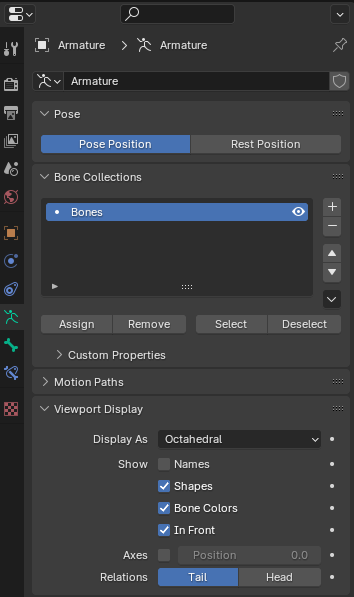

Overview¶
Creating an armature for your model allows the mesh to move. It uses bones that are parented
to each other in order to move the mesh.
Create the Armature¶
Shift+A to open the add menu. Armature to add an armature to the scene.

Once it's added, move it to the top level of the Scene so you your collection and armature separate.

Parent the Mesh to the Armature¶
Now we add bones to the armature where bones would exist in the mesh. When you create an armature it will create a single bone where you cursor is currently. Move the tip of the bone upwards so that you can see the bone more easily.

You can now parent the mesh to the armature by first selecting the bone and then pressing A to
select all objects. The bone should be lighter orange than the mesh.
Press Ctrl+P to open the parenting window and select Armature Deform With Empty Groups.

Note
You can use With Automatic Weights, but you should do this after creating the full skeleton.
Blender will try and associate the mesh with the bones automatically. For full control, I like
to use With Empty Groups.
Create, Name, and Parent the Bones¶
Name the initial bone root

Then in bone Edit Mode, select the root bone and press Shift+D to duplicate the bone. Move the duplicated bone
where you want and rename the bone.
Tip: Bones in Front
Enable the In Front option under Data -> Viewport Display -> In Front so that the bones are always
displayed in front of the mesh.

Continue making bones for the left side of the body. Append .l to the left side bone names (i.e. upper_arm.l). This will all the
Symmetrize to make the right side bones with .r appended in the name automatically (i.e. upper_arm.r).
Parent the bones appropriately as you go in the Bone -> Relations -> Parent input field.

Tip: Bone Head at Joint
Put the location of the Head of the bone exactly where you want that joint to rotate. The easisest way
to do this is to put the cursor to the joint by going to mesh Edit Mode and selecting the vertices
where the joint is. Press Shift+S to open the cursor menu and select Cursor to Selected.

Then go back to bone Edit Mode and select the Head of the bone. Then press Shift+S and select
Selection to Cursor. This will perfectly move the bone head to the joint.

It should look like this:

Symmetrize¶
Once you have the bones on the +X side of the mesh, you can mirror the bones across the Y axis
in the Bone Edit Mode under Armature -> Symmetrize. Select all of the bones you want to Symmetrize
before doing so.

Bone Vertex Groups¶
Now that we have all of the bones that we need to control our mesh, we need to assign the vertices
that will be moved when a specific bone is used. Do this by going to mesh Edit Mode and selecting
the vertices for a specific bone.

Warning
The vertex groups should be created automatically for the bones. If they don't exist, reparent the mesh to the armature and the Vertex Groups will be created.
Once all of the vertices have been assigned to the propert Vertex Groups, you can test it out by
going to bone Pose Mode and moving or rotating a bone.
Warning
Make sure that the Transform Pivot Point is set to Bounding Box Center.


Note
This method assumes vertices are only moved by a single bone. If the mesh needs to be moved
by multiple bones, Weight Painting comes into play. See the next page.
Rotate Bones for UE5¶
The Bone Transform in Blender is also different than the Bone Transform in UE5. To accommodate for this,
we have to rotate the bones so that the X axis goes along the bone. To start, we need to enable the
bone axes in Data -> Viewport Display -> Axes

You should now see the bone axes.

Rotate the bones to the correct position.
Tip: Rotate the Bone Tip
In bone Edit Mode select the bone tip and rotate along the desired access by +/-90. This will leave
the head in place and put the tip in the correct location.
Edit the Roll of the bone to get the correct Z axis direction.

Bones on the left side of the body and the spine bones will point backwards. Bones on the right side of the body will point forwards.

Tip
Import a working FBX into Blender to see the correct bone orientations. Make your bone orienations
match.
Finished¶
Once your mesh looks like this, you are ready to export to FBX and import into UE5!